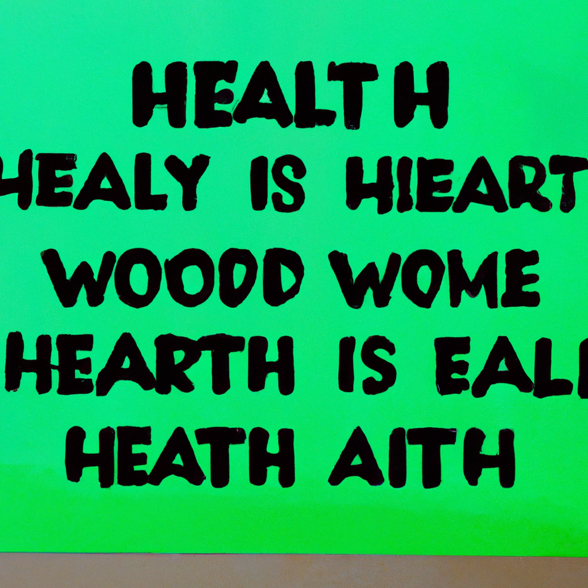

is big bang theory Real at all?
The Big Bang Theory is one of the most popular scientific theories about the origin of the universe. It proposes that the universe began as a singularity, a point of infinite density and temperature, and then rapidly expanded in a process known as cosmic inflation. However, some people still question whether the Big Bang Theory is real at all.
One of the main criticisms of the Big Bang Theory is that it relies heavily on mathematical models and assumptions about the behavior of matter and energy in the early universe. Some people argue that there is not enough empirical evidence to support the theory, and that it is based on a number of unproven assumptions.
Nevertheless, there is a significant amount of observational evidence that supports the Big Bang Theory. For example, astronomers have observed cosmic microwave background radiation, which is thought to be leftover radiation from the Big Bang. Additionally, the observed distribution of galaxies and the abundance of light elements in the universe also support the theory.
Despite these observations, some people still argue that there are alternative explanations for these phenomena. For example, some scientists propose that the universe could have been created by a process known as a "steady state" model, which suggests that the universe has always existed and will always exist.
In conclusion, while there are still some skeptics who question the validity of the Big Bang Theory, the overwhelming body of evidence supports this scientific theory. As our understanding of the universe continues to evolve, it is likely that we will gain even more insights into the origins of the cosmos.